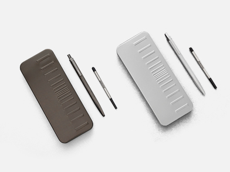
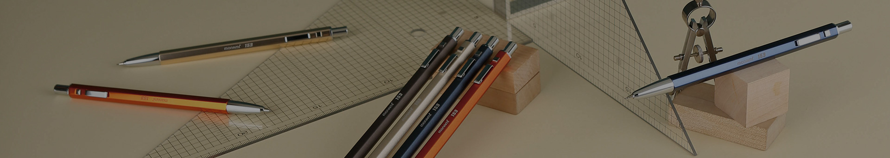
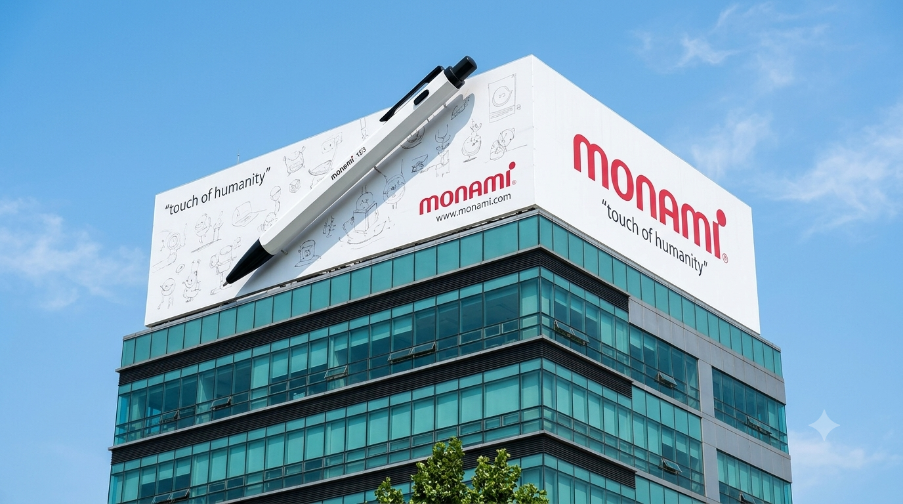

기록의 순간마다,
모나미가 함께합니다.
일상 속 작은 기록에서 새로운 가능성까지.
모나미가 걸어온 길과 앞으로 이어갈 이야기를 소개합니다.

CEO 메시지
모나미가 지켜온 가치와 앞으로 나아갈 방향을 전합니다.
항상 당신 곁의
소중한 친구로 남겠습니다.
안녕하십니까? (주)모나미 대표이사 송하윤입니다.
1960년 창립한 모나미는 모나미 153을 비롯한 다양한 문구 제품으로 대한민국 문구 산업과 함께 성장해 왔습니다.
이제 모나미는 필기구를 넘어 종합문구 기업으로서 국내외 시장에서 새로운 가능성을 넓히고 있습니다. 변화하는 시대와 고객의 요구에 귀 기울이며, 더 나은 제품과 경험을 만들기 위한 도전과 혁신을 이어가겠습니다.
앞으로도 일상 가까이에서 친숙함과 새로운 영감을 전하는 브랜드가 되겠습니다. 모나미에 지속적인 관심과 응원을 부탁드립니다. 감사합니다.
브랜드 스토리
누구나 매일 사용하는 펜에서 시작해, 표현의 가능성을 넓혀갑니다.
"언제 어디서나 모나미는 당신 곁에 있습니다."
모나미는 1960년 창립 이래 대한민국 문구 산업과 함께 성장해 왔습니다. 대표 제품인 모나미 153을 비롯해 다양한 문구 제품으로 사람들의 기록과 표현을 가까이에서 지원합니다.
문구를 만드는 일을 넘어, 사용자가 자신의 생각을 발견하고 표현하는 순간에 함께하는 브랜드가 되고자 합니다.

회사 정보
모나미를 이해하는 데 필요한 기본 정보를 확인할 수 있습니다.

- 회사명
- 주식회사 모나미
- 창립
- 1960년
- 주요 사업
- 문구 제품 제조 및 판매 등 공식 사업 소개 확인 필요
- 주소
- 경기도 용인시 수지구 손곡로 17
- 대표이사
- (주)모나미 대표이사 송하윤
회사 연혁
모나미의 성장 과정과 주요 사업 및 브랜드의 변화를 시대별로 소개합니다.
모나미의 창업과 도약기
1960 ~ 1967광신 화학 공업사 설립(회화구류 생산 시작)
153 볼펜 생산 개시
사인펜, 매직펜 생산
제1공장 신축(성수동)
모나미 화학 공업 주식회사 설립
모나미의 성장기
1970 ~ 1989제2공장 신축(성수동)
모나미 쎌라 만년필(주) 흡수합병
주식회사 모나미로 상호 변경 및 증권거래소 주식 상장
안산 공장 신축 및 이전(1·2공장 통합)
모나미 타일랜드 출범(태국 차이아난다사와 합작)
사업 진출 및 다각화
1990 ~ 1996모나미 데이타 시스템 설립(1992년 모나미컴퓨터시스템으로 변경)
(주)항소 설립
(주)모나미 애드 및 항소 인터내셔널(미국) 설립
(주)모나미로 (주)모나미 애드 합병
글로벌 기업으로서의 도약
2000 ~ 2001(주)익스프레스라인 14와 합병
e-비즈니스 사업부 신설
Zenith-MonAmi 설립(폴란드 합작법인)
상해 모나미 문화용품 유한공사(중국 현지법인) 설립
사무용품 유통서비스 기업으로의 도약
2006 ~ 2009MIS(모나미이미징솔루션) 설립
세계 최초 생잉크 보드마커 시그마플로 출시
모나미스테이션 사업 개시
프로유성매직, 국내 문구 최초 RED DOT AWARD 수상
새로운 50년의 시작
2010 ~ 2020모나미 창립 50주년 및 모나미 타일랜드 아마타공장 신축
기업용 홍보 통합 제작 서비스 MPOD 솔루션 설립
153 볼펜 출시 50주년 및 프러스펜 S 출시
153 고급 필기구 런칭(153 리미티드, 153 ID, 153 리스펙트)
국내 문구업계 최초 모나미 컨셉스토어 1호점 오픈(서울 합정동)
모나미 컨셉스토어 2호점(DDP) 및 3호점(에버랜드) 오픈
153 고급 필기구 런칭(153 GOLD)
모나미 타일랜드 아마타공장 증축
153 고급 필기구 런칭(153 NEO 만년필)
모나미 스토어 오픈(롯데백화점 부산점·평촌점, MCC 합정)
대한민국 디자인 대상 디자인 경영부문 국무총리상 수상
모나미 컨셉스토어 인사동점 오픈
모나미 창립 60주년 기념 프러스펜 3000 데스크펜 및 프러스펜 3000 60색 세트 출시
문화를 선도하는 기업으로의 도약
2021 ~ 2025모나미몰 쇼핑 앱 출시
디자인 문구 브랜드 제니스(Zenith), 지퀀스(ZEQUENZ) 론칭
모나미 코스메틱 용인 공장 신축
모나미 컨셉스토어 성수점 오픈
153 ID 만년필 및 153 리스펙트 리파인 출시
모나미 패션 랩 브랜드 런칭
프러스펜 3000 프라임 출시
사무용품 브랜드 LOBDA(롭다), 산업마카 브랜드 PROCAP 론칭
모나미 컨셉스토어 수원점 오픈
(주)항소 및 (주)모나미이미징솔루션즈(MIS) 합병
FX ZETA PEAK, 모나미 서명용 펜, RIZUM 출시